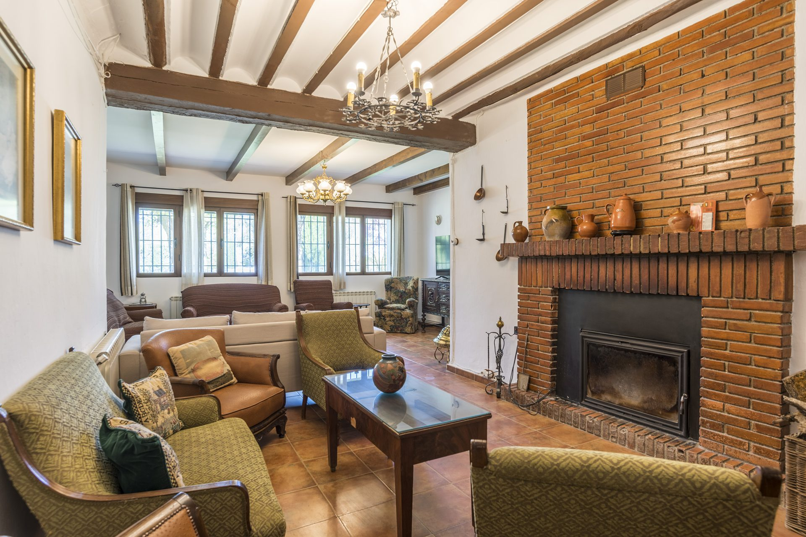
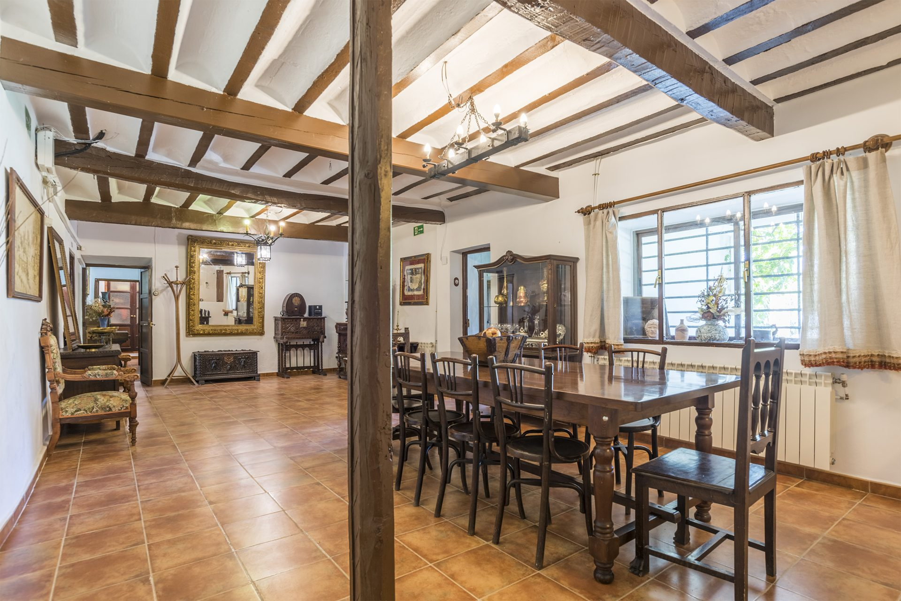
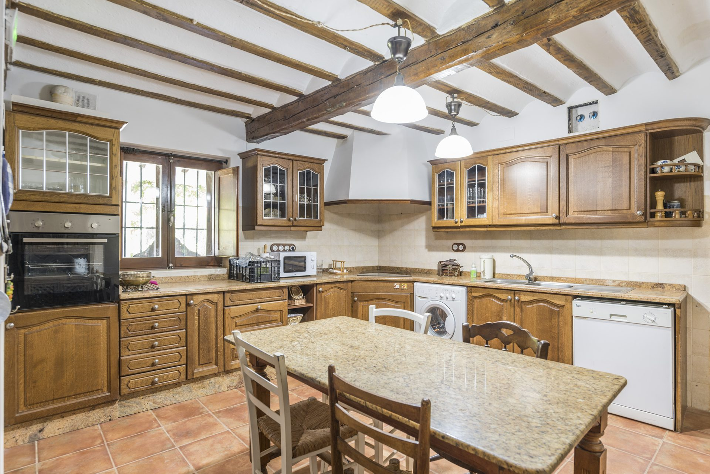
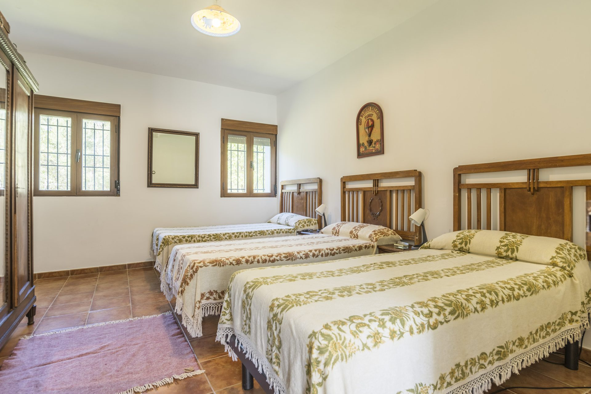
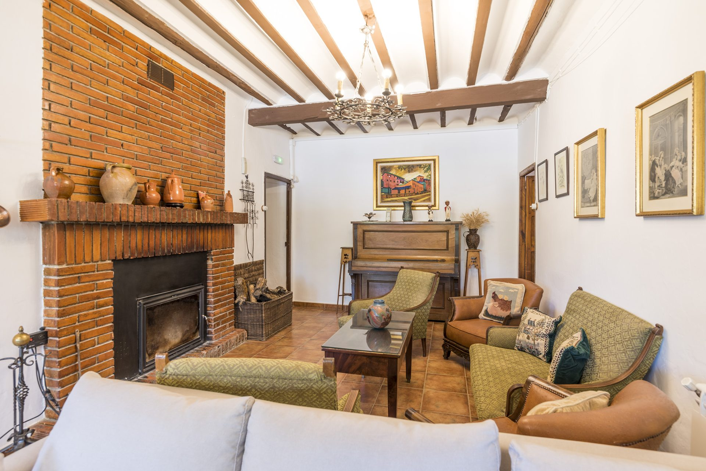
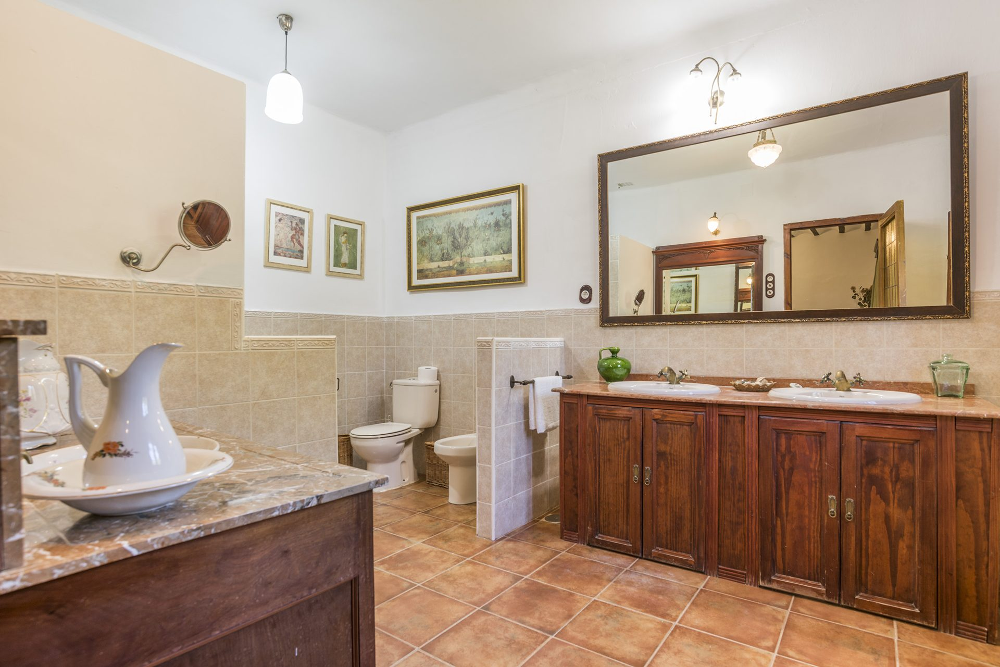

Intimidad, silencio y naturaleza
La casa rural Casa del Marqués es ideal para un grupo familiar o de amigos que compartan las instalaciones.
Su ubicación en el campo, lejos del núcleo urbano, crea un ambiente de gran intimidad e independencia que, junto con el silencio, invita a disfrutar del lugar de manera muy distinta a lo que estamos acostumbrados.
La amplitud de sus instalaciones y sobre todo de sus jardines (treinta mil metros cuadrados) ofrece una gran comodidad y una gran variedad de actividades al aire libre.
Todo lo que necesitas
Interior
- Lavadora
- Friegaplatos
- Microondas
- Calefacción
- Comedor
- Cocina
Comodidades
- Planta baja
- Accesible
- Salón con chimenea
- 3 dormitorios de matrimonio
- 4 camas individuales
- 2 sofás cama de matrimonio
- Baños compartidos
Servicios
- Amplios jardines
- Piscina
- Cuna disponible
Entorno
- Zona de reserva medioambiental (ZEPA)
- Red Natura 2000
- En pleno campo, lejos del núcleo urbano
Distribución y plazas
Relación de unidades de alojamiento con indicación de superficies y número de plazas:
| Estancia | Superficie |
|---|---|
| Cocina | 19,75 m² |
| Comedor | 51,10 m² |
| Salón | 37,50 m² |
| Dormitorio 1 · 2 plazas | 12,38 m² |
| Dormitorio 2 · 2 plazas | 13,03 m² |
| Estancia contigua al dormitorio 2 | 11,25 m² |
| Dormitorio 3 · 3 plazas | 16,36 m² |
| Estancia contigua al dormitorio 3 | 7,93 m² |
| Dormitorio 4 · 1 plaza | 10,11 m² |
| Dormitorio 5 · 2 plazas | 10,11 m² |
| Baño | 11,34 m² |
| Aseos femeninos | 18,00 m² |
| Aseos masculinos | 14,66 m² |
| Aseos adaptados | 7,70 m² |
* Existe además la posibilidad de camas supletorias: dos sofás cama de matrimonio (4 plazas, en las estancias junto a los dormitorios) y una cuna de viaje plegable (1 plaza).
Nuestros precios
El precio depende de las fechas, el número de noches y de personas. Te damos un precio personalizado al momento: escríbenos y te contestamos lo antes posible.





